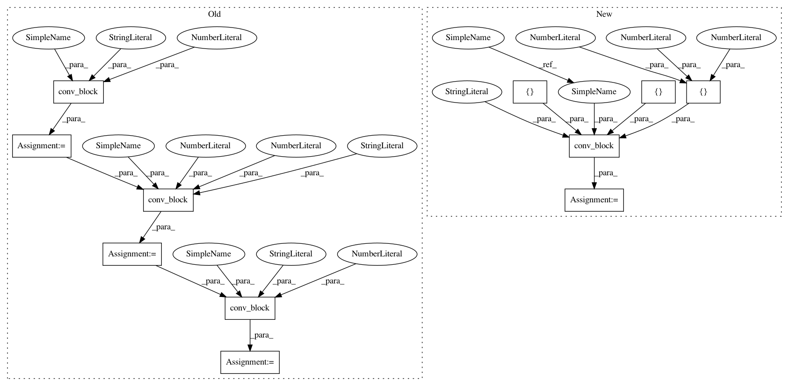

1d7b7345ab3254ed9b450dbd4208a3d63cb4963f,dataset/models/tf/linknet.py,LinkNet,_build,#LinkNet#,17
Before Change
layout = "cna" if b_norm else "ca"
layout_transpose = "tna" if b_norm else "ta"
net = conv_block(dim, net, 32, 3, layout_transpose, "output_conv_1", 2, **kwargs)
net = conv_block(dim, net, 32, 3, layout, "output_conv_2", **kwargs)
net = conv_block(dim, net, n_classes, 2, "t", "output_conv_3", 2, **kwargs)
logits = tf.identity(net, "predictions")
tf.nn.softmax(logits, name="predicted_prob")
After Change
n_classes = self.num_channels("masks")
data_format = self.data_format("images")
dim = self.spatial_dim("images")
enable_batch_norm = self.get_from_config("batch_norm", True)
n_filters = self.get_from_config("n_filters", 64)
n_blocks = self.get_from_config("n_blocks", 4)
conv = {"data_format": data_format}
batch_norm = {"momentum": 0.1,
"training": self.is_training}
kwargs = {"conv": conv, "batch_norm": batch_norm}
with tf.variable_scope("LinkNet"):
layout = "cpna" if enable_batch_norm else "cpa"
linknet_filters = 2 ** np.arange(n_blocks) * n_filters
net = conv_block(dim, inputs["images"], n_filters, 7, layout, "input_conv", strides=2, pool_size=3, **kwargs)
encoder_output = []
for i, filters in enumerate(linknet_filters):
net = self.downsampling_block(dim, net, filters, "downsampling-"+str(i), enable_batch_norm, **kwargs)
encoder_output.append(net)
for i, filters in enumerate(linknet_filters[::-1][1:]):
net = self.upsampling_block(dim, net, filters, "upsampling-"+str(i), enable_batch_norm, **kwargs)
net = tf.add(net, encoder_output[-2-i])
net = self.upsampling_block(dim, net, n_filters, "upsampling-3", enable_batch_norm, **kwargs)
layout = "tnacnat" if enable_batch_norm else "tacat"
net = conv_block(dim, net, [32, 32, n_classes], [3, 3, 2], layout, "output-conv",
strides=[2, 1, 2], **kwargs)
logits = tf.identity(net, "predictions")
tf.nn.softmax(logits, name="predicted_prob")
In pattern: SUPERPATTERN
Frequency: 3
Non-data size: 11
Instances
Project Name: analysiscenter/batchflow
Commit Name: 1d7b7345ab3254ed9b450dbd4208a3d63cb4963f
Time: 2017-11-09
Author: a.kozhevin@analysiscenter.ru
File Name: dataset/models/tf/linknet.py
Class Name: LinkNet
Method Name: _build
Project Name: analysiscenter/batchflow
Commit Name: 1d7b7345ab3254ed9b450dbd4208a3d63cb4963f
Time: 2017-11-09
Author: a.kozhevin@analysiscenter.ru
File Name: dataset/models/tf/fcn.py
Class Name: FCN
Method Name: _build
Project Name: analysiscenter/batchflow
Commit Name: 1d7b7345ab3254ed9b450dbd4208a3d63cb4963f
Time: 2017-11-09
Author: a.kozhevin@analysiscenter.ru
File Name: dataset/models/tf/linknet.py
Class Name: LinkNet
Method Name: upsampling_block